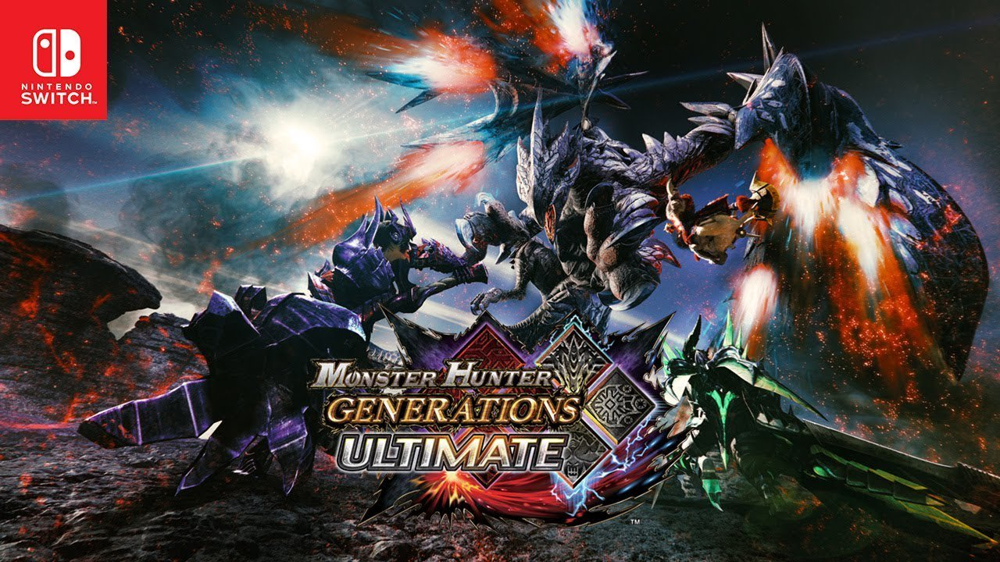
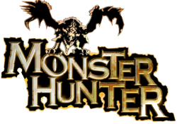

<!DOCTYPE html>
<html>
    <title>Monster Hunter Generations Ultimate</title>
    <link rel="stylesheet" href="../style.css">
    <link rel="icon" href="../gameImages/mh1Logo.png">
</html>
<body>
    <div>
    <h1>Monster Hunter Generations Ultimate</h1>
    <p>Monster Hunter Generations or Monster Hunter XX (Japan) is the third Monster Hunter game on the Nintendo 3DS in Japan and the first Nintendo Switch title world-wide and is the expansion to <a href="mhg.html">Monster Hunter Generations</a>.</p>
    <h1>New features</h1>
    <p>Now there are six hunting styles.</p>
    
    <table>
        <tr>
            <td>Release Dates</td>
            <td>
                <ul>
                    <li>Japan - 18th March 2017 (3DS)</li>
                    <li>Japan - 25th August 2017 (Switch)</li>
                    <li>Worldwide - 28th August 2018 (Switch)</li>
                </ul>
            </td>
        </tr>
        <tr>
            <td>Flagship Monster</td>
            <td>Bloodbath Diablos and Valstrax</td>
        </tr>
    </table>
</div>
<footer>
    
    <p>I'm Lukas and am a huge Monster Huner fan and that's why I made my wiki about the game.</p>
</footer>
</body>